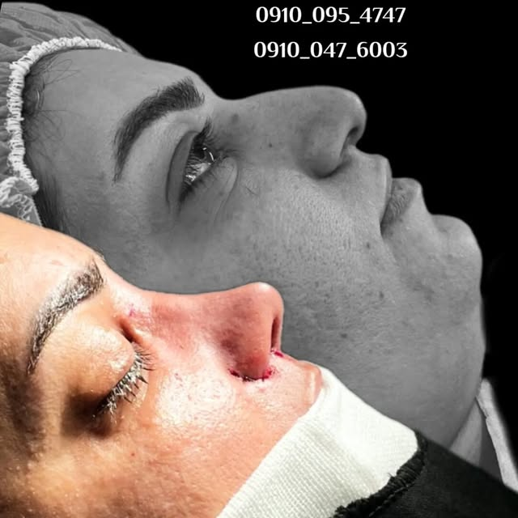

انحراف تیغه بینی (سپتوم) یکی از شایعترین علل گرفتگی مزمن بینی، صدای نفس و سردردهای مکرر است. سپتوپلاستی جراحی اصلاح این انحراف است و میتواند همزمان با رینوپلاستی انجام شود.
علائم انحراف تیغه بینی
- گرفتگی یکطرفه بینی که مدام برمیگردد
- تنفس سختی بهویژه هنگام خواب و ورزش
- خونریزی مکرر و خشکی یک سمت بینی
- سردرد و فشار صورت و تکرار سینوزیت
تفاوت سپتوپلاستی با رینوپلاستی
سپتوپلاستی جراحی عملکردی است: هدف آن صافکردن تیغه داخلی و بازکردن راه هواست و ظاهر بینی تغییر نمیکند. رینوپلاستی جراحی زیبایی است: قوز، نوک و فرم بینی اصلاح میشود. بسیاری از بیماران به هر دو نیاز دارند و انجام همزمان (رینوسپتوپلاستی) رایج و منطقی است.
انحراف تا چه حد درمان لازم دارد؟
انحراف خفیف بدون علامت نیازی به جراحی ندارد. فقط انحرافی که علائم تنفسی یا عفونتی مزمن ایجاد کرده، دخالت جراحی میخواهد. تصمیم با معاینه و آندوسکوپی بینی گرفته میشود.
دوران بهبودی
سپتوپلاستی معمولاً با بیهوشی کامل و بهصورت سرپایی انجام میشود. گرفتگی و ترشح خفیف تا دو هفته طبیعی است؛ تنفس بهتر از هفته دوم حس و تا سه ماه کامل میشود. ورزش سنگین بعد از سه تا چهار هفته آزاد است.
نکته پایانی
اگر همزمان نارضایتی ظاهری دارید، در همان مشاوره مطرح کنید؛ انجام دو جراحی جداگانه یعنی دو بار بیهوشی، دو بار دوران نقاهت و هزینه بیشتر.